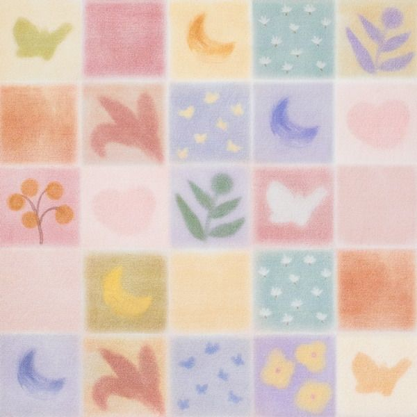

안녕하세요 라보엠입니다.
싱어송라이터 최유리가 드디어 첫 정규 앨범을 선보였습니다. 2024년 10월 28일 발매된 746은 최유리의 데뷔 4년 만에 나온 첫 정규 앨범으로, 그녀의 음악적 성장과 진정성을 고스란히 담아냈습니다. 팬들의 오랜 기다림 끝에 발매된 이번 앨범은 최유리의 독특한 음색과 섬세한 감성이 돋보이는 작품으로 평가받고 있습니다.

최유리 정규 앨범 746 소개
746이라는 독특한 제목은 최유리의 이름 획수를 따서 지어졌다고 합니다. 저는 이 정보를 듣기전에 노래 듣다가 바로 알아챘습니다. 이는 앨범에 담긴 그녀의 개인적인 이야기와 음악적 정체성을 상징적으로 나타내는 것 같습니다. 최유리는 인터뷰에서 "이 앨범은 제 인생의 모든 순간을 담아낸 작품"이라고 밝혔습니다. 이번 앨범에는 총 9개의 트랙이 수록되어 있으며, 그 중 두 곡이 더블 타이틀곡으로 선정되었습니다.
- 우리의 언어: 서정적인 보컬과 웅장한 스트링이 어우러진 발라드곡으로, 최유리의 감미로운 목소리가 돋보입니다. 가사에는 말로 표현하기 어려운 감정들을 음악으로 전달하고자 하는 그녀의 마음이 담겨있습니다.
- 솔직히 말할게: 기존 스타일에서 벗어난 미디엄 템포의 경쾌한 곡으로, 최유리의 새로운 음악적 시도가 돋보입니다. 재즈 요소를 가미한 이 곡은 리스너들에게 신선한 매력을 선사할 것으로 기대됩니다.
최유리 - 우리의 언어
최유리 - 솔직히 말할게
이 외에도 '사계절', '746', '가벼운 꿈', '메아리(feat. 적재)', '사랑에 대해', '들뜨지 않는 마음', '일렁이자' 등의 곡이 수록되어 있습니다. 각 곡마다 최유리의 섬세한 감성과 음악적 역량이 잘 드러나 있어, 앨범 전체를 통해 그녀의 음악 세계를 깊이 있게 경험할 수 있습니다. 적재와 함께 부른 메아리는 먼저 선공개 되었습니다.
최유리 신곡 메아리 feat. 적재 노래 가사 MV 정규앨범 선공개
안녕하세요 티스토리 음악 분야 크리에이터 한스입니다.최유리 좋아하세요? 혹시 적재는요? 그럼 둘이 노래를 함께 부른다면 어떨까요? 그런 일이 실제로 일어났습니다. 너무나도 매력적인 음
umm.la-bohe.me
저는 이번 앨범에서 개인적으로 5번 가벼운 꿈과, 9번 일렁이자가 참 마음에 듭니다.
살다 보면 이럴 수도 있겠지
이 정도 아픔은 다 가질 거야
별거 아닐 거야 난 다시 좋은 잠에 들 거야
그땐 뭐가 무서운지도 몰라
최유리 - 가벼운 꿈
일렁이자 나와 잊혀가게 둬보자
살아지자 나와 흘러가게 둬보자
사랑하자 할 때 끄떡없어 버리자
우리 사랑을 보내던 그 일렁이던 날
최유리 - 일렁이자
누구에게나 일어날 수 있는 일들, 슬픔, 힘든 일들 별거 아닐 거라 얘기해주는 최유리의 목소리가 큰 위안을 주었습니다.
앨범의 특징
- 전곡 자작: 최유리는 이번 앨범의 전곡 작사, 작곡, 프로듀싱을 직접 맡았습니다. 이는 그녀의 음악적 역량과 아티스트로서의 진정성을 보여주는 중요한 요소입니다. 최유리는 "모든 곡에 제 이야기를 담았어요. 듣는 분들이 공감할 수 있길 바랍니다."라고 전했습니다.
- 다양한 음악 스타일: 기존의 발라드 스타일에서 벗어나 경쾌하고 Jazzy한 곡도 선보입니다. 이는 최유리의 음악적 스펙트럼이 넓어졌음을 의미하며, 다양한 장르를 소화할 수 있는 그녀의 능력을 보여줍니다.
- 특별한 패키지: 음반은 다이어리 형태의 CD와 LP 버전으로 출시되었습니다. 이는 팬들에게 특별한 소장 가치를 제공하며, 최유리의 음악을 더욱 깊이 있게 즐길 수 있는 기회를 제공합니다.
- 협업의 결실: '메아리'에서는 싱어송라이터 적재와의 듀엣을 선보입니다. 두 아티스트의 목소리가 어우러져 만들어내는 하모니는 이 앨범의 또 다른 매력 포인트입니다.
최유리 - 1집 : 746 - 예스24
최유리 첫 번째 정규 [746][746]은 2020년 데뷔한 이래로 최유리가 첫 번째로 발매하는 정규 앨범으로, 데뷔 전 작곡했던 동명의 수록곡을 앨범명으로 삼았다.‘최유리’의 이름 획수를 따온 앨범명
www.yes24.com
앨범 제작 비하인드
최유리는 이번 앨범 제작에 1년 이상의 시간을 투자했다고 합니다. "완벽한 앨범을 만들기 위해 많은 노력을 기울였어요. 때로는 힘들기도 했지만, 팬들을 생각하며 끝까지 최선을 다했습니다."라고 밝혔습니다.
특히 타이틀곡 '우리의 언어'는 20번 이상 수정을 거쳤다고 합니다. 이는 최유리의 음악에 대한 열정과 완벽주의적 성향을 잘 보여주는 에피소드입니다.
향후 활동
최유리는 새 앨범 발매를 기념하여 11월 9일과 10일, 서울 세종문화회관 대극장에서 단독 콘서트 '2024 최유리 콘서트 : 우리의 언어'를 개최할 예정입니다. 이번 콘서트에서는 새 앨범의 수록곡들을 라이브로 처음 선보이게 되며, 팬들과 직접 소통하는 시간도 가질 예정입니다.
2024 최유리 콘서트 : 우리의 언어
tickets.interpark.com
또한, 최유리는 앨범 활동 이후 전국 투어도 계획 중이라고 합니다.
이번 앨범을 통해 최유리는 자신만의 음악 세계를 더욱 견고히 하고, 팬들에게 더 가까이 다가갈 수 있을 것으로 기대됩니다. 데뷔 4년 만에 선보이는 첫 정규 앨범인 만큼, 최유리의 진솔하고 따뜻한 이야기가 담겨 있으니 꼭 들어보세요.
최유리의 746은 현재 각종 음원 사이트에서 스트리밍 서비스 중이며, 오프라인 음반 매장에서도 구매할 수 있습니다. 음악을 사랑하는 모든 분들에게 이 앨범을 강력 추천드립니다. 최유리의 감성적인 목소리와 섬세한 가사, 그리고 다채로운 음악을 통해 여러분의 일상에 특별한 순간을 선사할 것입니다.